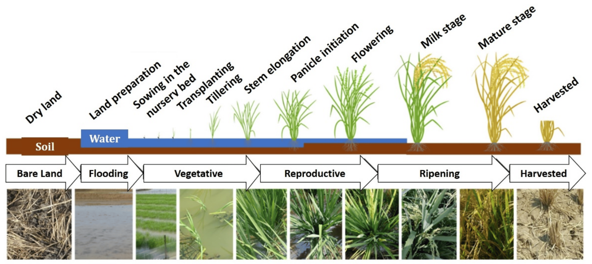

Rice
Types of Rice:
White Rice:
Also Known As: Milled rice.
Description: White rice is the most commonly consumed type of rice, polished to remove the bran and germ.
Uses: Used in a variety of dishes worldwide, including sushi, risotto, and as a side dish.
Growth Conditions: Grows best in warm, wet environments with plenty of water.
Varieties: Includes long-grain, medium-grain, and short-grain varieties.
Brown Rice:
Also Known As: Whole grain rice.
Description: Brown rice retains the bran and germ, making it more nutritious and chewy.
Uses: Often used in healthy dishes, salads, and as a side.
Growth Conditions: Requires similar conditions to white rice but is more tolerant of dry conditions.
Characteristics: Has a nuttier flavor and higher fiber content compared to white rice.

Jasmine Rice:
Also Known As: Thai fragrant rice.
Description: Jasmine rice is a long-grain variety with a delicate floral aroma and soft texture.
Uses: Commonly used in Thai and other Southeast Asian cuisines.
Growth Conditions: Prefers warm climates and requires ample moisture.
Nutritional Value: Contains essential nutrients but is lower in fiber than brown rice.
Basmati Rice:
Also Known As: Aromatic rice.
Description: Basmati rice is known for its long grains and fragrant aroma, often used in Indian and Middle Eastern dishes.
Uses: Ideal for biryanis, pilafs, and as a side dish.
Growth Conditions: Thrives in warm climates with well-drained soil.
Nutritional Value: Offers a good source of carbohydrates and some protein.
Growing Conditions
Climate:
Temperature:
Germination Stage: Rice seeds require a soil temperature of around 20°C to 30°C for optimal germination.
Vegetative Growth Stage: Prefers warm temperatures between 25°C and 35°C.
Reproductive Stage: As rice transitions to reproductive stages, temperatures between 30°C to 35°C are favorable.
Harvest Stage: Warm and dry conditions are ideal during harvest to ensure the rice is mature and reduce moisture content, preventing spoilage.
Rainfall and Moisture:
Moderate Rainfall: Rice requires moderate to high rainfall, generally between 1,000mm to 2,000mm per growing season. Rainfall distribution should be well-timed to ensure sufficient moisture during key growth stages.
Irrigation: In regions where rainfall is insufficient, irrigation is crucial, especially during flowering and grain filling. Over-irrigation should be avoided to prevent waterlogging.
Drought Sensitivity: While some varieties are drought-resistant, most rice requires consistent moisture for optimal growth.
Sunlight:
Rice requires full sunlight for at least 6 to 8 hours a day. Adequate sunlight is essential for photosynthesis, which drives plant growth and development.
Cloudy conditions can reduce photosynthetic activity and yield.
Humidity:
Rice prefers high humidity levels, especially during the growing season. However, excessive humidity can lead to fungal diseases, impacting yield and quality.
Proper field management practices can help manage disease pressure in high-humidity conditions.
Wind:
Mild winds can aid in pollination, but strong winds can cause lodging, making harvesting difficult.
Windbreaks can be used to protect rice fields from strong winds, maintaining plant stability.

Soil:
Soil Type:
Clayey Soil: Rice thrives best in clayey soils, which retain water well.
Loamy Soil: Loamy soils are also favorable, offering good drainage and moisture retention.
Sandy Soil: Sandy soils can be suitable if they are well-drained and irrigated properly.
Soil Structure:
Well-Drained: Rice requires well-drained soil to prevent waterlogging.
Good Aeration: Proper soil aeration is essential for root respiration and overall plant health.
Soil Fertility:
Nutrient-Rich: Rice grows best in fertile soils with adequate levels of nitrogen, phosphorus, potassium, and micronutrients.
Organic Matter: The presence of organic matter enhances soil fertility and supports beneficial microorganisms.

Soil pH:
Optimal pH Range: Rice prefers a slightly acidic to neutral soil pH, typically between 5.5 and 7.0.
pH Management: Lime can be added to acidic soils to raise the pH, while sulfur can be used to lower the pH of alkaline soils.
Soil Preparation:
Plowing and Tilling: Proper soil preparation involves plowing and tilling to create a fine seedbed.
Leveling: Leveling the field ensures uniform irrigation and prevents waterlogging.
Soil Conservation:
Erosion Control: Practices such as contour plowing and maintaining ground cover help prevent soil erosion.
Crop Rotation: Rotating rice with other crops can improve soil health and reduce pest buildup.
Water Requirements:
General Water Needs:
Rice requires a total of approximately 1,200-2,500 millimeters (mm) of water throughout their growing season, depending on the variety, climate, and soil conditions.
Critical Growth Stages:
Germination: Adequate soil moisture is necessary for seed germination and seedling establishment.
Tillering: Water is crucial during the tillering stage to promote the growth of additional tillers, which can lead to higher yields.
Flowering and Grain Filling: Irrigation during the flowering and grain filling stages is vital for achieving good grain size and weight.
Late Season: Reducing irrigation towards the end of the growing season allows the soil to dry, facilitating harvesting and preventing lodging.

Drought and Stress Management:
Drought-Resistant Varieties: Plant drought-resistant rice varieties in regions prone to water scarcity.
Deficit Irrigation: Implement strategies where water is applied during the most critical growth stages to manage water resources during drought conditions.
Planting and Seeding:
Planting:
Rice can be sown either by broadcasting seeds or by using seed drills for more uniform planting. They are typically sown in flooded fields or puddled soil to ensure adequate moisture.
Seeding Rates:
The seeding rate varies but generally ranges from 100 to 150 kg per hectare, depending on the variety and planting method.
Nutritional Value:
Carbohydrates:
Rice is a rich source of carbohydrates, providing energy.
Fiber:
Brown rice products are high in dietary fiber, promoting digestive health.
Vitamins and Minerals:
Rice contains essential nutrients, including B vitamins, iron, and magnesium.
Uses:
Food:
Rice is a staple food in many cultures, used in dishes like risotto, paella, and sushi. It can be served plain or flavored with various ingredients.
By-Products:
Rice husks are used for animal bedding, mulch, and bioenergy production.
Environmental Impact and Sustainability:
Rice cultivation can be water-intensive, but sustainable practices such as alternate wetting and drying, integrated pest management, and organic farming can help reduce environmental impact. Implementing these practices can improve soil health and reduce greenhouse gas emissions.